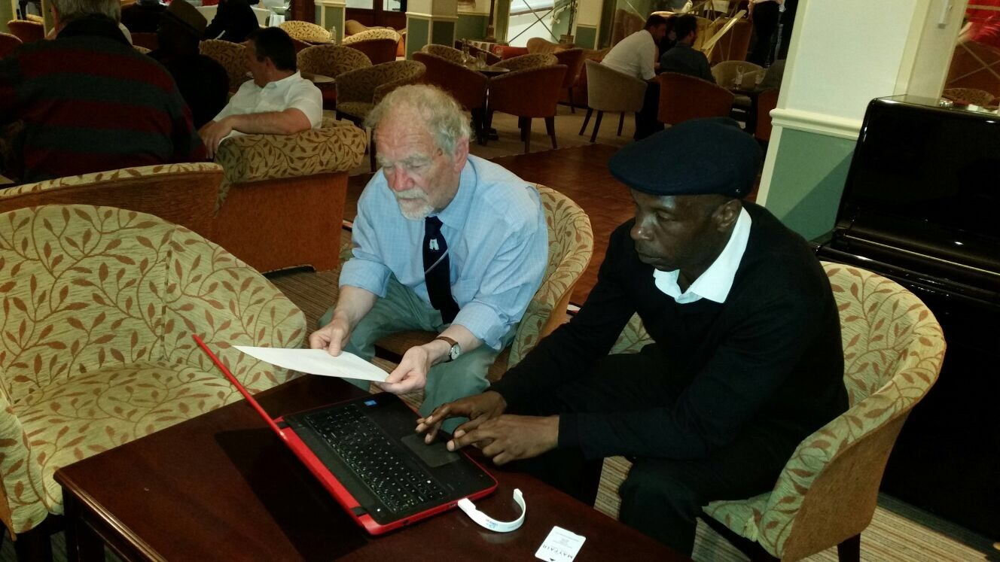

HSAA plans to run kwik cricket, tag rugby, the Primary Cross Country League and orienteering festivals in 2026–27. Schools must be affiliated to the Young & Active 2030 programme to take part.
Orienteering festivals are also included in the planned programme.

Cross Country League
Part of HSAA’s planned wider sporting programme for Hackney primary schools.
Planned for 2026–27
Cross Country League is included in HSAA’s planned 2026–27 programme for Hackney primary schools.
Schools must be affiliated to the Young & Active Hackney 2030 programme to take part.
Taking part
For entry arrangements, eligible year groups, competition formats, venues and dates, get in touch with HSAA.
Kwik Cricket
Part of HSAA’s planned wider sporting programme for Hackney primary schools.
Planned for 2026–27
Kwik Cricket is included in HSAA’s planned 2026–27 programme for Hackney primary schools.
Schools must be affiliated to the Young & Active Hackney 2030 programme to take part.
Taking part
For entry arrangements, eligible year groups, competition formats, venues and dates, get in touch with HSAA.
Boys’ participation
Contact HSAA for boys’ competition arrangements.
Girls’ participation
Contact HSAA for girls’ competition arrangements.
Tag Rugby
Part of HSAA’s planned wider sporting programme for Hackney primary schools.
Planned for 2026–27
Tag Rugby is included in HSAA’s planned 2026–27 programme for Hackney primary schools.
Schools must be affiliated to the Young & Active Hackney 2030 programme to take part.
Taking part
For entry arrangements, eligible year groups, competition formats, venues and dates, get in touch with HSAA.
Orienteering
Part of HSAA’s planned wider sporting programme for Hackney primary schools.
Planned for 2026–27
Orienteering festivals are included in HSAA’s planned 2026–27 programme for Hackney primary schools.
Schools must be affiliated to the Young & Active Hackney 2030 programme to take part.
Taking part
For entry arrangements, eligible year groups, competition formats, venues and dates, get in touch with HSAA.
Young & Active Hackney 2030
Annual school affiliation and the planned wider sporting programme.
Annual school affiliation
All Hackney primary schools are invited to affiliate annually to the Young & Active Hackney 2030 programme. Affiliation enables schools to take part in HSAA football and other sporting competitions.
Planned programme for 2026–27
Schools must be affiliated to the programme to take part in these planned competitions.
How to affiliate
Contact HSAA and ask for Steve Herbert, Affiliations Officer, for details of the programme and annual affiliation arrangements.